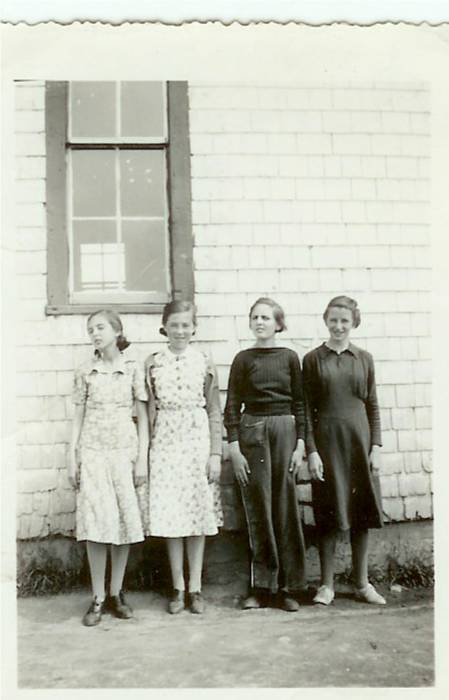

The Family Chronicle
No. 119 May 30, 2006
____________________________________________________________________

From left: Undated photo of Margaret McDougall, Jennie MacLean, Lois Williston and Helen Harper taken at Little Branch School. (Courtesy of Bertie MacLean)
Remembering MRHS
I believe that I started at MRHS in 1941 and graduated in 1946. There were about 30 of us in Grade 7 but only 12 graduated (Grade 11 was the last year of high school).
Ken, Norm and I were at the MRHS at the same time, which meant 3 “shortening pails” for lunches. One teacher had both Norm and I in her classes. She called Norm “Big Glendenning” and called me “Little Glendenning”.
One trick was to place a paper cup full of water on the top edge of a almost closed classroom door. When the door was opened, the cup of water came tumbling down, hopefully on someone’s head. Needless to say, it left a mess on the floor – especially after doing it several times.
The school had hot and cold running water and flush toilets – probably the first in the area. The boy’s toilet was constructed in such a way that there was a beam across the top of the entry to the section where the stalls were. It was a great place to practice “chinning”. I think that I could do a dozen but know that most others could do many more.
A large covered bin in the boy’s washroom was used to store potatoes from the school garden
Perley Quayle was a fine man and a good teacher but also a person who understood student pranks. He had a Model A Coupe which he usually parked at the east end of the school. We frequently lifted it and turned it around. Mr. Quayle could quote Latin but also repair an automobile.
One morning I missed the bus at the Little Branch corner and had to walk to school – about 3 miles. Of course, I was late. When I stepped into the school, I met Mr. Quayle. I explained what had happened and then quipped “Better late than never” to which he responded ‘Yes, but better never late.”
Lowell Williston had lost a leg in an accident with a hay mower and had a wooden replacement. In the fall of 1939, there was an outbreak of scarlet fever. The school health officer was a Dr. Loggie. One sign of scarlet fever was a rash on one’s back, arms or legs. Dr. Loggie, the Health Inspector, would check these areas as an indicator of scarlet fever. He asked Lowell to pull up his pant leg; Dr. Loggie looked at his leg and pronounced him free of scarlet fever; it was Lowell’s wooden leg.
In the early years, we had to plant and tend a school garden. As I recall, we were paired and each pair had a small plot. Come fall, the vegetables were harvested and canned. The latter was part of the course in Home Economics. The canned vegetables were kept in the closet under the stairs. Occasionally, some of the boys would sneak into the closet before noon, open one of the cans, place the can inside the sheet metal on top of the furnace to warm and then enjoy canned vegetables as part of their lunch.
Perley Quayle brought some of his own equipment to the school for our use in the shop. One item was a huge lathe for wood turning. It was operated like a treadle sewing machine; one student usually provided power while another was turning a project on the lathe. Mr. Quayle also set up a blacksmithing area in the coal bin behind the furnace and we learned to work metal in the forge – shaping, welding, annealing, tempering, etc.
One sunny warm spring day, a number of boys wandered down to the shore from the school yard and went for a swim. We were knowingly late for the first class after lunch. I do not remember any discipline resulting from the escapade.
The school had a very tall flagpole. The system of erecting the flagpole was an interesting example of pulleys and levers with horses used as the power. Although I remember how, it is difficult to explain without the use of diagrams.
Way Offices
In browsing the Canada Post website recently, I noted that a number of the Black River post offices had been established originally as “Way Offices”. I sent a query to Canada Post and the reply included the following:
“Apparently these way offices -a peculiarity of the Maritime Provinces- were an unofficial part of the post office and served to provide pick up and drop off services for communities where it was not financially possible to have a regular post office.”
Note: Google “Satellite images” and see
what your community or place looks
Like from space.
The Family Chronicle (Copyright) is an occasional newsletter published by Don Glendenning and posted on the family website. It is intended to share information about my family, community and the times in which I grew up. While every effort is made to be accurate, errors are likely to occur. Comments, enquiries and information may be sent to 62 Queen Elizabeth Drive, Charlottetown, PEI, C1A 3A9. Tel: 902 892 5859. Email: dglende@auracom.com Web: www.glendenning.net/don